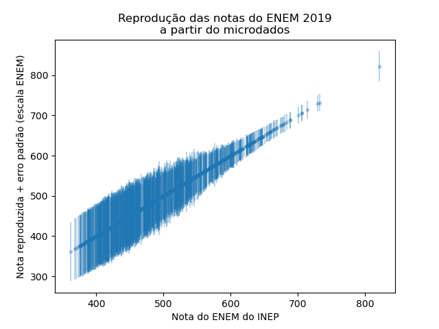

Apresentação#
O ENEM é um exame de seleção para ensino superior no Brasil organizado pelo estado. O resultado obtido é capaz de mudar o rumo de uma vida. Em 2022, por exemplo, um jovem com média 750 no ENEM podia ter acesso ao curso ENGENHARIA DE CONTROLE E AUTOMAÇÃO da UFRJ com nota de corte 749,45 na modalidade ampla concorrência.[^refsisu] Por outro lado, um outro candidato com uma nota de 740 não teria acesso a este mesmo curso.
Como devemos interpretar as notas do ENEM? Há mesmo razões legítimas de distinguir os dois jovens? Podemos, com certa confiança, dizer que um candidato é mais apto para cursar determinados cursos do que outros? O que significa a nota do ENEM e como esta nota deve ser interpretada pelo candidato, pela IES e pela sociedade?
Tip
O ENEM é o Exame Nacional do Ensino Médio. Desde 2009 o ENEM é uma prova de seleção, com quatro partes objetivos com 45 questões e uma dissertação.
Um dos objetivos principais deste trabalho é fazer uma análise de “robustez” das notas do ENEM. Queremos estudar, principalmente, a confiabilidade das notas geradas pelo INEP e analisar como o reconhecimento do fato que há incertezas nesta nota afeta a interpretação do resultado do ENEM. Pretendemos mostrar que há uma diferença grande entre interpretações ingênuas das notas e aquelas legitimatadas por especialistas da área de avaliação educacional. Há duas dificuldades principais de interpretação e uso das notas do ENEM, aquelas que se referem à escala e aquelas que decorrem da negligência das incertezas na nota.
Interpretação da escala ENEM#
Somente uma nota alta ou baixa na prova de mátemática, ou ciência da natureza, não permite inferir conclusões sobre o desempenho futuro do candidato sem outras premissas. A validade da prova para determinadas finalidades (sucesso acadêmico, desempenho em outras provas) precisa ser estudado e argumenado. É natural achar que uma nota alta numa prova chamada de “Língua Portuguesa” quer dizer que o candidato é “proficiente” em língua portuguesa. Mas na realidade o que é proficiente e o que significa que uma pessoa é mais proficiente do que um outro, são conceitos bem mais complexos do que pode ser avaliada com um conjunto limitado de tarefas (45 questões de múltipla escolha no caso do ENEM).
O ENEM gera um número, mas não é óbvio como interpretar este número. Por exemplo, certamente não é correto interpretar as notas das quatro provas objetivas como localizado numa escala de 0 até 1000. Tampouco é correto fazer uma analogia com as escalas de 0-10 com que se acostumamos na vida escolar. A escala ENEM foi construído de modo que em 2009, para uma certa parte de alunos, a média da escola era 500, com desvio padrão 100. O INEP busca manter a comparabilidade entre anos da desta escala ENEM. Assim, uma afirmação mais razoável é que notas abaixo de 700 (dois desvios padrão acima da média) são normalmente obtidas por 97,7% dos candidatos.
Um equívoco relacionado é achar que a nota é relacionada com algum tipo de fração, por exemplo 70% de acertos ou (ainda menos defensável) algo como x% de alguma “quantidade de aprendizagem”. A escala ENEM e escalas parecidos usados em avaliações educacionais não tem “zero” ou valor mínimo ou máximo e as notas geradas nestas escalas não devem ser usados em contas do tipo “esta nota vale x vezes mais que esta”.
A metodologia para construir a escala ENEM, a teoria de resposta ao item (TRI), transforma padrões de acertos em notas mas de uma maneira mais complexa do que simplesmente somar o número de acertos. A TRI leva em conta as diferentes características de cada item (questão de múltipla escolha no caso do ENEM). Mas também não é totalmente correto pensar que um item mais difícil sempre “pesa mais” na nota final. É um pouco contraintuitivo, mas é uma outra característica de um item, a chamada “discriminação” influencia mais na nota final. A rigor, não é possível conceber a nota gerada pela TRI como sendo composto de uma média ponderada de contribuições independentes de acertos de itens individuais. A TRI leva em conta o padrão de respostas inteiro para estimar a proficiência (nota).
O que é então a interpretação correta da nota na escala ENEM? Como enfatizada acima, a questão da validade, para determinadadas finalidades, é a mais importante de todas. Se admitimos que o conteúdo da prova é pelo menos aproximadamente válido para nossas finalidades, podemos se valer da psicometria e afirmar que a escala ENEM é uma escala do tipo “intervalo”. Isto quer dizer que, se levarmos em conta as incertezas de medição (veja abaixo), é razoável ordenar candidatos baseado na sua nota e até podemos afirmar que uma diferença de proficiência entre candidatos com, digamos, 500 e 550, representa a mesma diferença do que entre candidatos com 600 e 650. Por outro lado, como já dissemos, não é correto interpretar 600 como sendo “20% a mais” do que 500.
Incerteza e robustez da nota ENEM#
É natural associar ao fato que a prova gera um número, ainda relatado com vários algarismos (“a sua nota é 749,5”), uma impressão de precisão e confiabilidade. Esta impressão é enganosa. Mostramos com este projeto que se admitimos que as provas do ENEM “medem” algo num certo sentido, elas medem proficiência com muito menos precisão e confiabilidade do que normalmente é assumido pelas instituições e o público em geral. A confiabilidade da nota é limitada, fundamentalmente, porque a prova não é infinitamente longa. A ideia de um intervalo de confiança é familiar de pesquisas de opinião ou de intenção de voto. Nestas pesquisas, uma amostra é usado para fazer inferências sobre a população em geral. O número relativamente pequena de participantes (mil, ou duas mil) é o que leva a uma contribuição à incerteza no resultado. De forma análoga, é possivel estimar a inevitável incerteza (estatística ou amostral) na nota de um candidato causado pelo número finito (45) de questões em provas do ENEM.
Para ter uma ideia da ordem de grandeza deste tipo de incertezas nas notas do ENEM, mostramos na figura abaixo um dos resultados deste projeto. Conseguimos reproduzir (exatamente) as notas que o INEP divulgou, a partir dos padrões de resposta dos candidatos e usando os parâmetros dos itens publicados. O algorítmo TRI que usamos, além da própra nota, fornece uma estimativa do erro padrão e assim um intervalo de confiança.

Um exemplo concreto
Um candidato com uma nota próximo a 600. O chamado “erro padrão” desta nota é por volta de 30 pontos, o que leva a um intervalo de confiança de 95% de 540 até 660.
Veja aqui para um notebook onde é possível escolher um dos candidatos que fizeram a prova no passado e analisar qual seria a nota e seu o intervalo de confiança.
Além da incerteza estatística, há outras razões que a nota ENEM não deve ser tratado como avaliação absoluta e final da abilidade do candidato. Neste projeto investigamos o efeito sobre a nota de algumas decisões do INEP que em princípio podem ser considerados arbritárias, mas que afetam diferentes candidatos de forma diferente:
Algumas questões são eliminados para fins do cálculo da nota pelo INEP. Isto acontece regularmente e por vários motivos. Apesar de, supostamente, serem testadas antes de fazer parte de uma das provas do ENEM, algumas questões apresentem características estastísticas que dificultam ou impossibilitam calcular a nota via TRI. Um exemplo seria uma questão que foi acertada por pessoas com desempenho fraco no resto da prova, mas errada por candidatos com desempenho bom.
Uma pessoa pode ter acertado ou errada um item simplesmente por desatenção, não relacionado com seu real abilidade na área avaliada.
O INEP usa uma determinada metodologia (“EAP”) para determinar a nota pelo TRI, mas outras metodologias poderiam ser usado.
Neste projeto investigamos também a robustez da nota ENEM, no sentido de investigar como pequenas decisões com as acima afetam a nota do ENEM.
[^refsisu] O SISU é o sistema e processo organizado pelo MEC que organiza as inscrições e distribuição das vagas para cursos de ensino superior no Brasil. Veja aqui para a relação das notas de corte e distribuição de vagas.